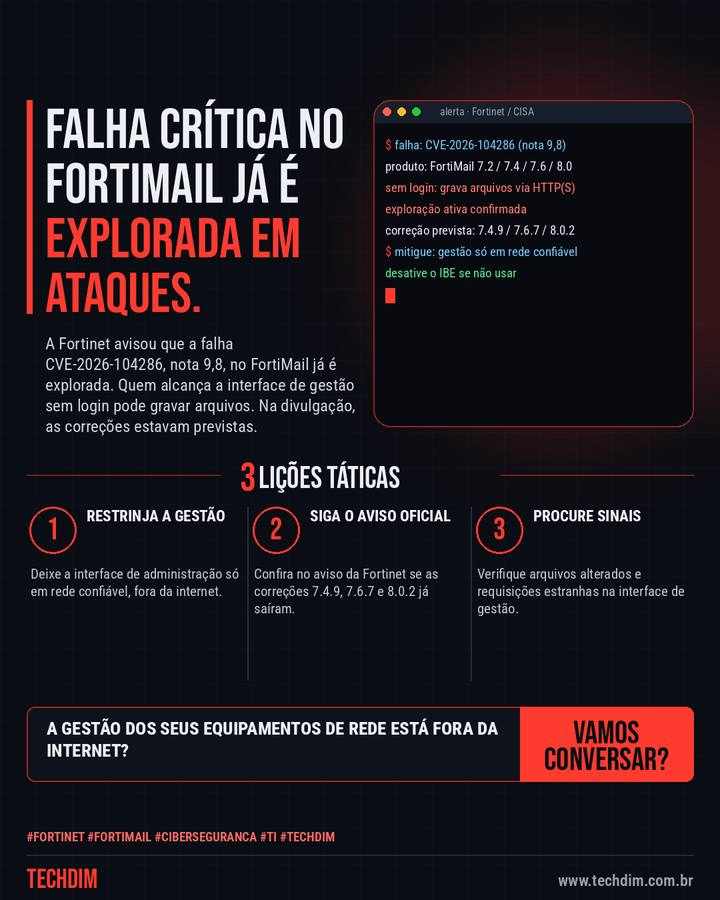

Alerta de segurança
FortiMail: falha crítica (nota 9,8) já é explorada em ataques
A Fortinet avisou que a falha CVE-2026-104286, nota 9,8, no FortiMail já é explorada. Quem alcança a interface de gestão sem login pode gravar arquivos. Na divulgação, as correções estavam previstas.

O que aconteceu
- A CVE-2026-104286 (nota 9,8) deixa um atacante sem login gravar arquivos no FortiMail por requisições HTTP/HTTPS; a Fortinet confirma exploração
- Afetadas as versões 7.2, 7.4, 7.6 e 8.0; na divulgação, as correções 7.4.9, 7.6.7 e 8.0.2 estavam previstas. Quem usa a 7.2 deve migrar para a 7.4 ou superior
- Enquanto isso: restrinja a interface de gestão a redes confiáveis, tire-a da internet, desative o IBE se não usar e procure arquivos alterados
Gateway de e-mail precisa de acesso restrito e monitoramento. A TECHDIM revisa a exposição dos seus sistemas.
Por que importa
Falha crítica com exploração ativa; as medidas de contenção valem para qualquer equipamento de borda exposto.
Como se proteger
- Restrinja a gestão. Deixe a interface de administração só em rede confiável, fora da internet.
- Siga o aviso oficial. Confira no aviso da Fortinet se as correções 7.4.9, 7.6.7 e 8.0.2 já saíram.
- Procure sinais. Verifique arquivos alterados e requisições estranhas na interface de gestão.
Fontes consultadas
Mais do Radar de hoje
Este texto resume as fontes citadas na data de publicação. Confira sempre o aviso oficial do fabricante antes de agir em produção.